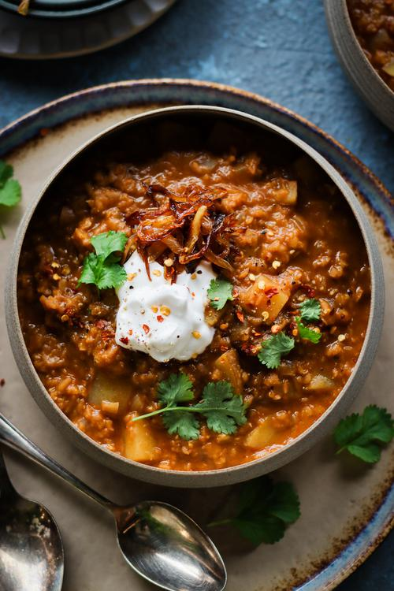

Potato and Red Lentil Soup

Description
This protein-packed soup requires little supervision, takes only a few minutes to prep,
and simmers away on the stove by itself until it's ready to be enjoyed! The recipe was extracted
from Pick Up Limes, an excellent resource for meat free diets.
We aways like to make a huge pot, and store batches in the freezer to enjoy later on. This serves
4, takes only 5 min of prep and 25 min to cook. Perfect for a quick midweek dinner!
Ingredients
- Vegetable oil - 14 ml
- Medium onion, sliced - 1.5x
- Water - 1280 ml
- Vegetable stock cube, crushed - 1.5x
- Dry red lentils, rinsed - 250 g
- Medium potato, cubed - 2x
- Paprika powder - 1.5 tbsp
- Onion powder - 3 tsp
- Garlic powder - 3 tsp
- Balsamic vinegar - 15 ml
- Salt and pepper, to taste
Steps
- To a large pot on medium-high heat, add the oil. When hot, add the onion and sauté until
golden, about 5 minutes.
- Add in the remaining ingredients. Bring to a boil and then reduce to a simmer. Partially
cover with a lid and cook for 15 minutes, or until the lentils and potato are cooked
through.
- Taste test, adding more salt and pepper if desired and add more water depending
on how you like the consistency of your soup.
- Serve with yogurt, bread, and any other desired toppings. Enjoy!